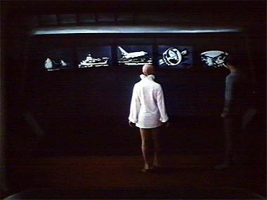
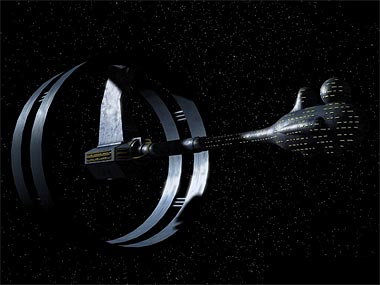
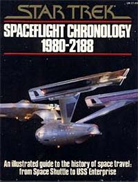

|

Clique aqui
para visitar o
Acervo de colunas


|
Tirando uma Enterprise da cartola
 Ainda no entendeu? Nesta cena, em que uma sonda com a forma da tenente Ilia e o comandante Willard Decker batem papo na sala de recreao da Enterprise, vemos um painel com cinco imagens. Decker diz sonda, "todas essas naves se chamam Enterprise". No painel vemos uma caravela britnica, um porta-avies, o nibus espacial da Nasa, uma nave desconhecida e a Enterprise de Kirk. Ops, eu disse "uma nave desconhecida"? Pois , esses quadros no primeiro filme de Jornada so tudo que segura a idia de Rick Berman e Brannon Braga dentro da cronologia oficial (ou "cannica", como dizem por a) da srie. Ser que podemos considerar um enfeite de cenrio evidncia suficiente para dizer que h uma Enterprise anterior NCC 1701, apesar de 500 e tantos episdios parecerem dizer o contrrio? A resposta, por incrvel que parea, "depende". O maior desafio de Berman e Braga com a nova srie ser "driblar" a cronologia. No apenas uma questo de obedec-la (pois isso provavelmente restringiria muitas possibilidades dramticas), mas de encontrar brechas por onde eles possam justificar o que est acontecendo no sculo 22 sem contradizer tudo o que foi estabelecido nos sculos 23 e 24. Felizmente, essas brechas existem, para que seja realizado um casamento (arranjado, sem dvida) entre o fato de a nave de Kirk (que foi antecedido pelos capites Robert April e Christopher Pike) ter sido a primeira em alguma coisa e haver uma outra Enterprise antes dela. Todas essas brechas so detalhes to pequenos quanto o painel que sustenta a tese da Enterprise do sculo 22. Uma delas diz que a nave de Kirk no foi a primeira Enterprise, foi a primeira USS Enterprise. "Ahhh, bom", respiramos aliviados. Outra: a nave de Kirk no foi a primeira Enterprise, foi a primeira Enterprise sob a autoridade da Frota Estelar. E, para completar, a nave da Srie Clssica a primeira "nave estelar" (starship) Enterprise. A que veio antes era classificada como "nave espacial" (spaceship). De posse dessas informaes (leia-se, desculpas), os criadores se permitiram narrar as aventuras da at ento obscura nave espacial Enterprise, em sua jornada rumo formao da Federao. E, convenhamos, eles conseguiram todas as justificativas de que eles precisavam. Agora, j que eles esto apostando todas as suas fichas no painel de "Jornada nas Estrelas - O Filme", ser que eles vo mesmo levar esse painel totalmente a srio? Ser aquela nave, tal e qual est desenhada, o novo veculo espacial de Jornada? Claro que no. Em primeiro lugar, aquela nave bem feia. D uma olhada em como ela se parece, depois de uma revitalizada feita pelo artista grfico amador Andrew Hodges (e descoberta nos confins da internet pelo incansvel Gustavo Leo).  Em segundo lugar, dificilmente os produtores da nova srie iam convocar John Eaves e Herman Zimmerman, dois excelentes designers, s para dizer: "dem uma olhada, essa a nave que vocs vo criar". H gente que aposta numa mescla de atitudes --uma nave nova, criada com base em alguns elementos do painel. Isso at possvel. A resposta definitiva, s saberemos em alguns meses. De qualquer forma, nem s de aparncia vive uma nave espacial. O que mais h para saber sobre esse veculo "canonizado" por um painel-enfeite de Jornada I? Bom, na verdade, essa pergunta oferece duas respostas diferentes. A verdadeira dada na Enciclopdia de Jornada nas Estrelas, escrita pelo maior historiador trekker de todos os tempos, Michael Okuda. Alm de ser designer das sries de Jornada, Okuda passa seu tempo com a esposa vendo todos os episdios que pode, tomando notas e escrevendo livros de referncia sobre Jornada nas Estrelas. Alm de "Star Trek Encyclopedia", o artista tem crdito por "Star Trek Chronology", o livro semi-oficial contendo a histria de todas as sries. Segundo Okuda, a SS Enterprise na verdade uma nave criada pelo artista Matt Jefferies (sim, o mesmo artista que criou a Enterprise clssica) para um piloto de uma outra srie de fico cientfica criada por Gene Roddenberry. Como Gene no conseguiu vender seu piloto, a nave ficou relegada ao esquecimento --at ser includa nos painis de Jornada I, levando o design, que estava morto e enterrado, ao estrelato, 21 anos depois.  Agora, a resposta mais interessante (e cambaleante) vem do livro "Star Trek Spaceflight Chronology", escrito por Stan & Fred Goldstein, ilustrado por Rick Sternbach e publicado pela Pocket Books em 1980. Esse livro daqueles que os roteiristas de Jornada nunca ouviram falar mas, mesmo assim, fazem questo de contrariar todas as informaes l contidas.Segundo a dupla Goldstein, a SS Enterprise, uma nave de passageiros a servio da Terra, operou entre os anos 2123 a 2165. H no livro uma longa lista de especificaes tcnicas, mas os dados mais interessantes so os seguintes:
Obviamente, poucas (possivelmente
nenhuma) dessas especificaes iro sobreviver ao lanamento
da nova srie. De cara, j podemos destruir a noo de nave de
passageiros. A Enterprise do capito Archer ser uma nave de
explorao. Outros dados que devem cair so a capacidade de
transporte (950 pessoas gente demais!) e o comprimento da nave. Salvador
Nogueira, jornalista, escreve regularmente
sobre |
 A
nova srie de Jornada nas Estrelas, segundo consta, ser
sobre as aventuras do capito Jackson Archer no comando da
Enterprise, em pleno sculo 22. Quem minimamente versado na
histria do franchise ouviu essa premissa e passou um bom tempo
coando a cabea. Pera, a primeira Enterprise no aquela
do capito Robert April, depois passada a Christopher Pike e
finalmente ao lendrio James Tiberius Kirk?
A
nova srie de Jornada nas Estrelas, segundo consta, ser
sobre as aventuras do capito Jackson Archer no comando da
Enterprise, em pleno sculo 22. Quem minimamente versado na
histria do franchise ouviu essa premissa e passou um bom tempo
coando a cabea. Pera, a primeira Enterprise no aquela
do capito Robert April, depois passada a Christopher Pike e
finalmente ao lendrio James Tiberius Kirk?